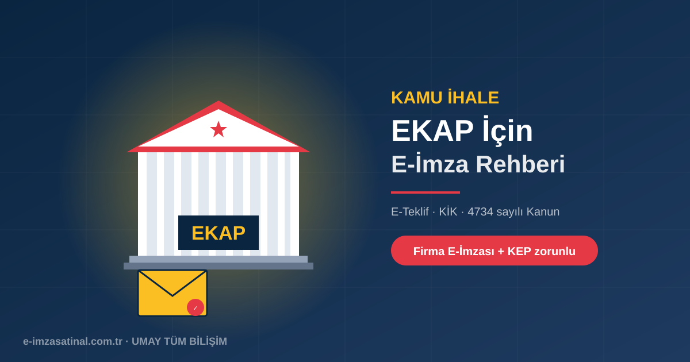

EKAP Nedir?
EKAP (Elektronik Kamu Alımları Platformu), Türkiye'de kamu kurumlarının açtığı tüm ihalelerin duyurulduğu, tekliflerin alındığı ve süreçlerin yürütüldüğü elektronik platformdur. Kamu İhale Kurumu (KİK) tarafından yönetilir ve 4734 sayılı Kamu İhale Kanunu kapsamındaki tüm alım süreçleri buradan yapılır.
2018 sonrası kamu ihalelerinin büyük çoğunluğu e-teklif (elektronik teklif) yöntemi ile yürütülmektedir. Kağıt teklif dönemi neredeyse kapandı.
EKAP'a Kimler Katılabilir?
- Türkiye'de kayıtlı gerçek ve tüzel kişiler
- Serbest meslek erbabı (avukat, mali müşavir, mühendis, mimar)
- Şahıs şirketleri
- Limited şirketler, anonim şirketler, sermayesi paylara bölünmüş komandit şirketler
- Kooperatif ve dernekler (uygun ihalelerde)
- İş ortaklıkları (birden fazla firmanın birleşerek katılması)
EKAP İçin Gerekli Belgeler
EKAP kaydı ve teklif verme için hazırlanması gerekenler:
- Firma E-İmzası: Şirket yetkilisi adına düzenlenmiş nitelikli elektronik sertifika
- KEP Hesabı: Tebligat ve resmi bildirimler için (özellikle A.Ş./LTD.ŞTİ. için zaten zorunlu)
- MERSİS kaydı: Şirketin merkezi sicil kayıt sisteminde güncel bilgileri
- Vergi Levhası ve Vergi Borcu Yok Yazısı (elektronik olarak alınır)
- SGK Prim Borcu Yok Yazısı (elektronik olarak alınır)
- Ticaret Sicil Gazetesi (dijital erişilebilir)
- İhaleye özel istenen belgeler (deneyim, bilanço, mesleki yeterlilik vb.)
EKAP'a Kayıt ve İlk Giriş
1. Firma E-İmzası Al
Firma yetkilisi adına bireysel e-imza satın alın. Şirket bilgileri sertifikada yer alır. Firma e-imza hakkında detay →
2. KEP Hesabı Aç
KEP zorunludur; ihale tebligatları buraya gelir. KEP başvurusu →
3. EKAP Kaydı
ekap.kik.gov.tr adresinden "Firma Kaydı" bölümüne gidin. E-imza ile giriş yapın, firma bilgilerinizi doldurun.
4. Onay Bekleyin
KİK onayı 1-3 iş günü sürer. Onay sonrası tüm ihale ilanlarına ve teklif fonksiyonlarına erişiminiz açılır.
E-Teklif Süreci: Adım Adım
Bir ihaleye elektronik teklif nasıl verilir?
1. İhale İlanını İnceleyin
EKAP'ta ilgi alanınıza göre filtre kullanarak açılan ihaleleri görüntüleyin. Her ihale için ihale dokümanları indirilebilir (bedelsiz veya ücretli).
2. Teklif Zarfını Hazırlayın
Klasik ihalede fiziksel zarf kullanılırdı; e-teklifte tüm evraklar elektronik olarak yüklenir:
- Teklif Mektubu — fiyat teklifiniz
- Geçici Teminat — banka teminat mektubu (elektronik nüsha)
- Yeterlik Belgeleri — deneyim, uzmanlık, bilanço
- Meslek Odası Belgesi (mühendislik, mimarlık ihalelerinde)
- Diğer istekli belgeler — ihale şartnamesine göre değişir
3. E-İmza ile Teklifi Onaylayın
Tüm belgeler yüklendikten sonra e-imza ile teklif zarfı imzalanır. Bu imza:
- Firma yetkilisinin kimliğini doğrular
- Teklif içeriğinin değiştirilmediğini garanti eder
- Teklif zamanını kriptografik olarak kaydeder
4. Son Teklif Zamanı
İhale ilanında belirtilen son teklif zamanına kadar (dakikası dahil) teklif sistemde olmalıdır. Zamanı geçen teklifler otomatik reddedilir.
5. Açılış ve Değerlendirme
Belirlenen zamanda ihale komisyonu tüm teklifleri açar (kriptografik olarak deşifre eder). En avantajlı teklif seçilir, sonuç EKAP üzerinden duyurulur.
Yaygın Hatalar ve Kaçınma Yolları
- E-imza süresi dolmuş: Bir sonraki güncelleme yapılmadan e-imza yenilenmiş olmalıdır. Yenileme rehberi →
- MERSİS'te güncel olmayan yetki: İhaleye teklif verecek yetkili değişmişse MERSİS önce güncellenmelidir.
- Yanlış geçici teminat tutarı: Teminat tutarı ihale dokümantasyonuna göre hesaplanmalıdır (genelde tahmini bedelin %3'ü).
- Belge tarihi eski: Vergi/SGK borç yoktur yazıları güncel tarihli olmalıdır (genelde son 3 ay).
Önerilen Paket: EKAP Katılımcıları İçin
- 1 × Firma E-İmzası (3 yıllık) — yetkili adına, MERSİS uyumlu
- 1 × KEP hesabı — zorunlu (TTK 18/3 zaten gerektirir)
- Mali mühür (e-Fatura kullanıyorsanız)
- Yıllık maliyet: ~1.500-2.500 TL
Bu maliyet ortalama bir kamu ihalesi tutarının binde biri kadardır. Tek bir ihale kazancıyla yıllarca kapatır.